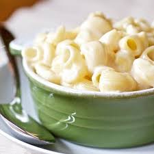

Panera Mac and Cheese

Here is a recipe for a copycat version of Panera's mac and cheese:
Ingredients
- 1 pound Lumaconi pasta
- 4 tablespoons unsalted butter
- 1/4 cup all-purpose flour
- 2 1/2 cups milk
- 4 ounces white American cheese
- 8 ounces extra-sharp white Vermont cheddar
- 1/4 teaspoon Dijon mustard (optional)
- 1/2 teaspoon kosher salt
- 1/2 teaspoon hot sauce
Instructions
- Cook the pasta according to the package directions until al dente. Drain and set aside.
- Melt the butter in a large saucepan over low heat.
- Once melted, whisk in the flour and cook for 1 minute, whisking constantly to prevent burning.
- Slowly pour in the milk, whisking as you go.
- Increase the heat to medium and continue whisking until the sauce thickens and bubbles, about 4-5 minutes.
- Remove the pan from heat.
- Add the sliced American cheese, shredded white cheddar, Dijon mustard (if using), salt, and hot sauce (if using).
- Stir until the cheese melts.
- Add the cooked pasta to the cheese sauce. Stir to coat the pasta evenly, then return the saucepan to medium heat.
- Cook for 1 minute, stirring constantly, until the mac and cheese is warmed through.
- Serve immediately.
Back to home